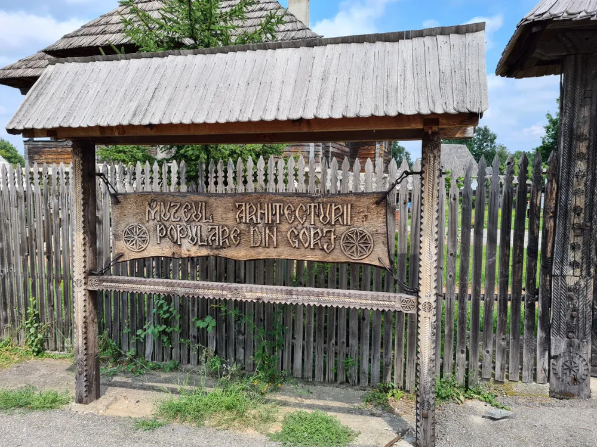

Muzeul de la Curtișoara

Muzeul Arhitecturii Populare din Gorj este un muzeu în aer liber, situat în satul Curtișoara, județul Gorj, în prezent cartier al orașului Bumbești-Jiu, care cuprinde monumente de arhitectură și tehnică populară din Gorj. Este declarat monument istoric, sub denumirea „Muzeul Arhitecturii Populare Gorjenești”.
Începuturile muzeului în aer liber datează din anul 1968, când s-a organizat o expoziție în Cula Cornoiu de la Curtișoara. În 1970, prin Decizia nr. 178/1970 a Consiliului Popular Județean Gorj, s-a hotărât organizarea unui muzeu în aer liber având ca temă ’’Arhitectura populară din Gorj’’, muzeu care a fost inaugurat la 18 august 1975. Muzeul a fost amplasat în satul Curtișoara, aflat la 10 km nord de Târgu Jiu, pe o suprafață de 13 ha. Au fost aduse din județ și amplasate aici un număr de 24 de monumente de arhitectură populară.[8] Meritul înființării muzeului revine muzeografei Elena Udriște și arhitectului Nicolae Vînătoru care a conceput primele schițe.
Muzeul în aer liber cuprinde monumente de arhitectură și tehnică populară din Gorj. Pe lângă cula Cornoiu (secolul al XVIII-lea) au fost aduse și remontate biserica din zid Sf. Ioan Botezătorul (1820), construcții țărănești din lemn (case, pivnițe, pătule, instalații tehnice populare din secolele XVIII - XIX) cu mobilier țărănesc, piese de port, țesături, unelte, ceramică, crestături în lemn. Cea mai veche casă expusă, ridicată cu peste 200 de ani în urmă, este Casa Popii Udriște, din satul Olari, ce datează din 1802.Muzeul expune și două biserici: prima o ctitorie a Bălașei Cornoiu de la 1821 cu hramul Sf. Ioan Botezătorul, iar a doua, aparținând familiei Tătărescu, care au fost strămutate în anul 2002 de la Poiana Rovinari, precum și fântâna Sf. Arhangheli (1896).